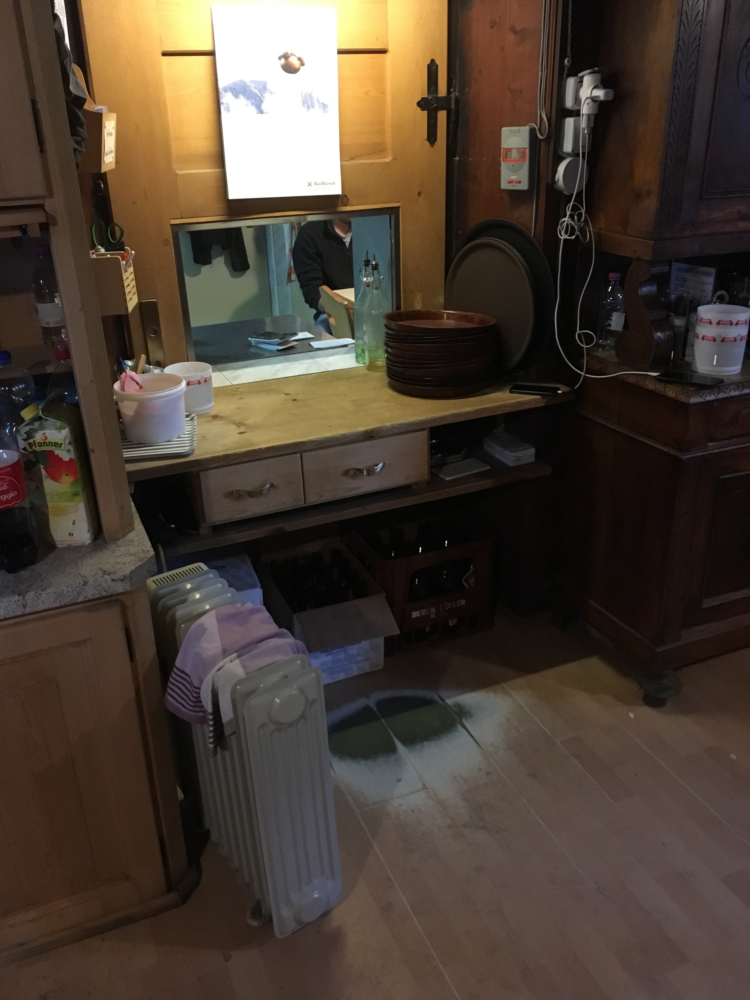

I am a follower of the Statpics blog and one of my favourite category of posts is YADDA which means Yet Another Door Distribution Again.
I was in the Rifugio Giogo Lungo (Lenkjöchlhütte in German) and I took this pictures of the mess hall: the little windows is where the cook pass the dishes to the waiter, the waiter waits in front of it on a wooden floor and you can see the two footprint distribution where the paintings weared out.
